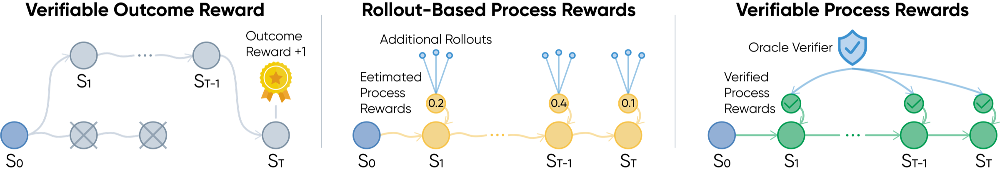
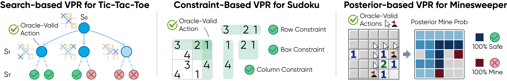
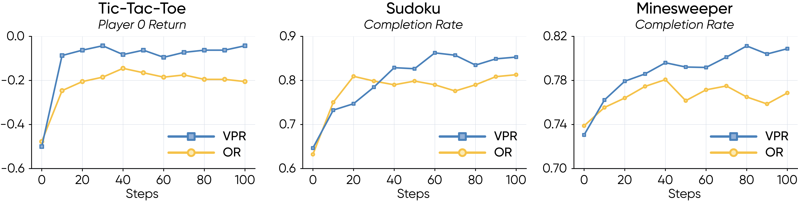
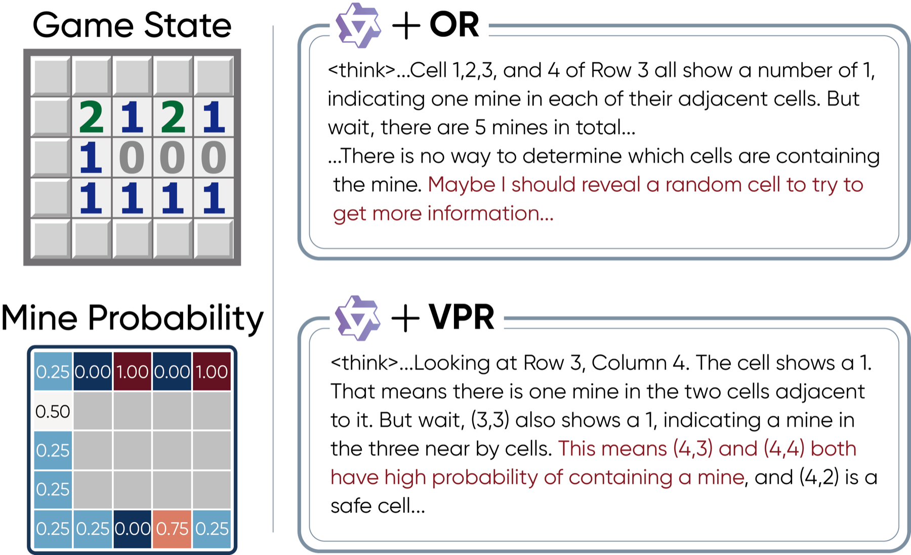

Search-Based VPR
Tic-Tac-Toe. MCTS lookahead identifies strategically optimal moves, rewarding actions with the highest estimated value.

Three reward designs for long-horizon reasoning: outcome-level rewards, rollout-based process rewards, and verifiable process rewards.
Reinforcement learning from verifiable rewards has become a powerful way to improve LLM reasoning, but most methods only reward final success. In long-horizon agentic tasks, this creates a credit assignment problem: a trajectory may fail after many correct steps, or succeed despite flawed intermediate decisions.
Verifiable Process Rewards (VPR) studies densely-verifiable agentic reasoning problems, where each intermediate action can be checked by a task-specific oracle. Instead of learning a noisy process reward model or estimating step values through extra rollouts, VPR uses task structure itself to provide reliable turn-level supervision.
Every turn receives local feedback from a symbolic or algorithmic verifier.
Rewards come from task logic, not learned judges or subjective preferences.
VPR-trained agents improve on general and agentic reasoning benchmarks.

Three VPR instantiations: search-based verification, constraint-based verification, and posterior-based verification.
VPR focuses on agentic reasoning settings where a verifier V(st, at) can check whether the current action is valid, useful, or optimal under the environment structure. This converts sparse trajectory-level feedback into dense process rewards:
Tic-Tac-Toe. MCTS lookahead identifies strategically optimal moves, rewarding actions with the highest estimated value.
Sudoku. A constraint oracle verifies whether a filled digit is consistent with the unique solution.
Minesweeper. Posterior mine probabilities verify safe reveals and certain mine flags under partial observability.
During training, VPR uses a turn-level GRPO-style objective. Multiple trajectories are sampled for each update, verifier rewards are normalized by turn across active trajectories, and the resulting advantages are used in a clipped policy optimization objective. Correct intermediate decisions can therefore be reinforced even if a later step fails, while invalid decisions can be penalized even if the trajectory succeeds by chance.
Experiments use Qwen3-4B with thinking mode enabled. Across the three densely-verifiable training environments, VPR consistently outperforms outcome-level reward and Monte Carlo process-reward baselines.

Evaluation curves over GRPO training show that dense verifiable feedback improves sample efficiency and final policy quality.
| Method | Tic-Tac-Toe | Sudoku | Minesweeper | |||
|---|---|---|---|---|---|---|
| 1st | 2nd | SR | CR | SR | CR | |
| Base | -0.31 | -0.35 | 3.91 | 63.24 | 0.78 | 73.71 |
| OR | -0.18 | -0.21 | 48.44 | 82.80 | 3.91 | 77.26 |
| MC-PR | -0.11 | -0.20 | 34.73 | 77.39 | 2.34 | 78.67 |
| VPR | -0.09 | -0.11 | 56.25 | 85.13 | 10.39 | 80.27 |
In-domain performance. Tic-Tac-Toe reports average return against a strong MCTS opponent; Sudoku and Minesweeper report success rate (SR) and completion rate (CR).
Minesweeper-trained VPR gives the strongest average over GSM8K, MATH-500, AIME24/25, GPQA-Diamond, BBH, and MMLU-Pro.
Sudoku-trained VPR shows the largest GPQA gain, consistent with constraint elimination helping multiple-choice reasoning.
Minesweeper-trained VPR transfers partial-observation reasoning to embodied text-command planning.
Sudoku-trained VPR improves goal-directed web interaction, suggesting useful transfer from verifiable process supervision.
| Training Env. | Method | GSM8K | MATH-500 | AIME24 | AIME25 | GPQA-D | BBH | MMLU-P | Avg. |
|---|---|---|---|---|---|---|---|---|---|
| N/A | Base | 94.57 | 84.40 | 30.00 | 18.33 | 43.13 | 88.39 | 67.61 | 60.92 |
| Tic-Tac-Toe | OR | 94.53 | 84.28 | 31.00 | 18.67 | 43.84 | 88.47 | 67.70 | 61.21 |
| MC-PR | 94.63 | 84.36 | 30.67 | 19.00 | 44.19 | 88.51 | 67.72 | 61.30 | |
| VPR | 94.74 | 83.80 | 33.33 | 21.33 | 45.15 | 88.96 | 67.86 | 62.17 | |
| Sudoku | OR | 94.40 | 84.16 | 30.67 | 18.67 | 45.25 | 88.56 | 67.76 | 61.35 |
| MC-PR | 94.54 | 84.28 | 30.33 | 18.67 | 44.04 | 88.63 | 67.65 | 61.16 | |
| VPR | 94.65 | 83.54 | 31.67 | 19.67 | 50.20 | 88.82 | 67.88 | 62.35 | |
| Minesweeper | OR | 94.56 | 84.62 | 31.33 | 19.00 | 44.29 | 88.45 | 67.88 | 61.45 |
| MC-PR | 94.66 | 84.58 | 31.00 | 18.67 | 44.55 | 88.42 | 67.73 | 61.37 | |
| VPR | 94.81 | 85.00 | 32.67 | 21.00 | 48.33 | 88.34 | 67.98 | 62.59 |
Zero-shot pass@1 on general reasoning benchmarks. VPR achieves the highest average score for every training environment.
| Training Env. | Method | ALFWorld SR | WebShop Score | WebShop SR |
|---|---|---|---|---|
| N/A | Base | 24.13 | 27.42 | 1.40 |
| Tic-Tac-Toe | OR | 25.37 | 28.76 | 1.53 |
| MC-PR | 26.12 | 29.45 | 1.67 | |
| VPR | 27.36 | 30.88 | 1.87 | |
| Sudoku | OR | 24.88 | 30.62 | 1.67 |
| MC-PR | 25.12 | 30.18 | 1.73 | |
| VPR | 25.62 | 34.29 | 2.20 | |
| Minesweeper | OR | 26.12 | 28.91 | 1.60 |
| MC-PR | 27.11 | 29.62 | 1.73 | |
| VPR | 28.61 | 30.38 | 1.93 |
Zero-shot transfer to ALFWorld and WebShop. VPR improves over Base and outperforms OR / MC-PR across training environments.
VPR can be interpreted as an on-policy filtered imitation-like update over oracle-valid sampled actions. Under verifier error, gradient bias scales linearly with verifier disagreement. Under a simple long-horizon success model, VPR signal accumulates across steps while outcome-reward signal is diluted with horizon.
Dense feedback is not automatically beneficial. In the Tic-Tac-Toe ablation, a weak MCTS oracle with only 100 simulations actively hurts both in-domain performance and downstream generalization, while stronger verifiers recover and improve the learning signal.
A side-by-side Minesweeper trajectory makes the credit-assignment pattern concrete. OR-trained policies receive no signal until termination, so locally risky reveals are not penalized and cautious flags are not reinforced. VPR instead scores every intermediate action against the posterior verifier, producing immediate feedback for actions.

@misc{yuan2026verifiable,
title={Verifiable Process Rewards for Agentic Reasoning},
author={Huining Yuan and Zelai Xu and Huaijie Wang and Xiangmin Yi and Jiaxuan Gao and Xiao-Ping Zhang and Yu Wang and Chao Yu and Yi Wu},
year={2026},
eprint={2605.10325},
archivePrefix={arXiv},
primaryClass={cs.AI},
url={https://arxiv.org/abs/2605.10325}
}